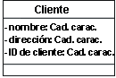

| Directriz: Aplicación de ingeniería en bases de datos relacionales |
 |
|
| Elementos relacionados |
|---|
IntroducciónEn esta directriz se describen los métodos para correlacionar las clases de diseño persistentes en el modelo de diseño en tablas del modelo de datos. Transformación de los elementos del modelo de diseño en elementos del modelo de datosLas clases persistentes del modelo de diseño se pueden transformar en tablas en el modelo de datos. En la tabla siguiente se muestra un resumen de la correlación entre los elementos del modelo de diseño y los elementos del modelo de datos.
Correlación de clases persistentes con tablasLas clases persistentes del modelo de diseño representan la información que debe almacenar el sistema. Conceptualmente, dichas clases puede parecer un diseño relacional. (Por ejemplo, las clases del modelo de diseño se pueden reflejar de algún modo como entidades en el esquema relacional). Sin embargo, a medida que el proyecto pasa de la elaboración a la construcción, los objetivos del modelo de diseño y el modelo de datos relacional divergen. La causa de la divergencia se debe a que el objetivo del desarrollo de la base de datos relacional es normalizar datos, mientras que el propósito del modelo de diseño es encapsular en comportamiento cada vez más complejo. La divergencia de ambas perspectivas, datos y comportamiento, conduce a la necesidad de correlacionar entre elementos relacionados de los dos modelos. En una base de datos relacional escrita en tercera forma normal, cada fila de las tablas, cada "tuple", se considera como un objeto. Una columna de la tabla equivale a un atributo persistente de una clase. (Recuerde que una clase persistente puede tener atributos transitorios). Por este motivo, en el caso simple en el que no existan asociaciones a otras clases, la correlación entre ambos mundos resulta sencilla. El tipo de datos del atributo corresponde a uno de los tipos permitidos para las columnas. Ejemplo La clase Cliente siguiente:  cuando se modela en RDBMS, convierte para una tabla llamada Cliente, con las columnas ID_Cliente, Nombre y Dirección. Una instancia de esta tabla se puede visualizar como:
Claves y atributos persistentesPara cada atributo persistente, se pueden plantear preguntas con el objeto de extraer información adicional, que se va a utilizar para modelar correctamente el objeto persistente en un modelo de datos relacional. Por ejemplo:
Correlación de asociaciones entre objetos persistentes y el modelo de datosLas asociaciones entre dos objetos persistentes se realizan como claves externas a los objetos asociados. Una clave externa es una columna de una tabla que contiene el valor de la clave principal del objeto asociado. Ejemplo: Suponga que existe la asociación siguiente entre Pedido y Cliente:
Cuando se correlacionan en tablas relacionales, el resultado es una tabla Pedido y una tabla Cliente. La tabla Pedido tiene columnas para los atributos listados, además de una columna adicional denominada ID_Cliente que contiene referencias de claves externas a la clave principal de la fila asociada a la tabla Cliente. Para un Pedido determinado, la columna ID_Cliente contiene el identificador del cliente al que se ha asociado el pedido. Las claves externas permiten que RDBMS una la información relacionada. Correlación de asociaciones de agregación con el modelo de datosLa agregación también se modela utilizando relaciones de clave externa. Ejemplo: Suponga que existe la asociación siguiente entre Pedido y Elemento de línea:
Cuando se correlacionan en tablas relacionales, el resultado es una tabla Pedido y una tabla Elemento de línea. La tabla Elemento_Línea tiene columnas para los atributos listados, además de una columna adicional denominada ID_Pedido que contiene una referencia de clave externa a la columna asociada en la tabla Pedido. Para un elemento de línea concreto, la columna ID_Pedido contiene el ID_Pedido del pedido al que se ha asociado el elemento de línea. Las claves externas permiten que RDBMS optimice las operaciones de unión. Además, es importante implementar una restricción de supresión en cascada que proporcione la integridad referencial al modelo de datos. Una vez que se haya llevado a cabo, siempre que se elimine el Pedido, también se suprimirán todos sus Elementos de línea. Modelado de las relaciones de generalización en el modelo de datosEl modelo de datos relacional estándar no admite el modelado directo de la herencia. Para modelar la herencia se pueden utilizar varias estrategias, que se pueden resumir del modo siguiente:
Modelado de las asociaciones de varios a varios en el modelo de datosUna técnica estándar del modelado relacional consiste en utilizar una entidad de intersección para representar asociaciones de varios a varios. Aquí se puede aplicar la misma propuesta: se utiliza una tabla de intersección para representar la asociación. Ejemplo: Si los Proveedores pueden suministrar varios Productos, y varios Proveedores pueden suministrar un Producto, la solución es crear una tabla Proveedores/Productos. Dicha tabla sólo puede contener las claves externas de las tablas de Proveedor y Producto, y sirven para enlazar las Proveedores y sus Productos relacionados. El modelo de objeto no tiene análogo para esta tabla; se utiliza, estrictamente, para representar las asociaciones del modelo de datos relacional. Perfeccionamiento del modelo de datosUna vez que se hayan transformado las clases de diseño en tablas y las relaciones adecuadas del modelo de datos, se perfecciona el modelo según sea necesario a fin de implementar la integridad referencial y optimizar el acceso a los datos a través de vistas y procedimientos almacenados. Para obtener más información, consulte el apartado Directriz: Modelo de datos. Aplicación de ingeniería en el modelo de datosLa mayoría de herramientas de diseño de aplicaciones admiten la generación de scripts DDL (Lenguaje de definición de datos) de modelos de datos o la generación de las bases de datos a partir del modelo de datos. La aplicación de la ingeniería a las bases de datos se debe planificar como parte de las tareas de desarrollo e integración global de las aplicaciones. El tiempo y la frecuencia para aplicar ingeniería a la base de datos a partir del modelo de datos depende de la situación del proyecto específico. Para proyectos de desarrollo de aplicaciones que crean una nueva base de datos, es posible que la aplicación de ingeniería inicial se deba llevar a cabo como parte del trabajo de implementar una versión arquitectónica estable de la aplicación al final de la fase de elaboración. En otros casos, la aplicación de ingeniería inicial se puede realizar en las primeras iteraciones de la fase de construcción. Los tipos de elementos de modelo del modelo de datos a los que se puede aplicar ingeniería varían en función de las herramientas de diseño específicas y del RDBMS utilizados en el proyecto. Por lo general, se puede aplicar ingeniería a los elementos estructurales principales del modelo de datos, incluidas las tablas, las vistas, los procedimientos almacenados y los índices, de la base de datos. |
© Copyright IBM Corp. 1987, 2006. Reservados todos los derechos. |